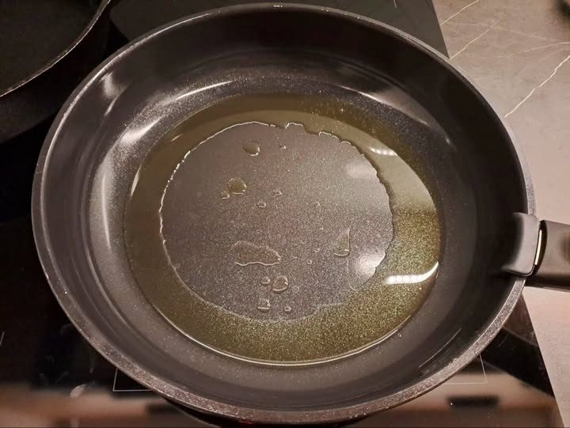

Dụng cụ bếp
Chảo “lồi giữa”, dầu chạy hết ra viền: chảo hỏng hay nhà sản xuất cố ý?

Chị em nào từng gặp cảnh này chưa: đổ tí dầu vào chảo, dầu chạy tuột ra hết viền, giữa chảo khô trơ như sân phơi thóc. Thế là phán luôn: chảo cong rồi, vứt! Khoan đã các mom ơi, có hai trường hợp, mà một trong hai là nhà sản xuất cố tình làm thế đấy ạ 😜
Trường hợp 1: cong thật vì sốc nhiệt
Chảo dùng được bếp từ thường có đáy mấy lớp: thân nhôm, đáy ép thêm một miếng inox hoặc thép hút được nam châm. Hai kim loại này nóng lên nở ra, nguội đi co lại không cùng nhịp – nhôm nở mạnh hơn inox chừng 1,4 lần.
Chảo đang nóng rực mà mình xả nước lạnh vào xèo xèo, mặt trên nguội trước, mặt dưới còn nóng, lớp này kéo lệch lớp kia, thế là cong luôn, không về như cũ được nữa. Chảo nhôm một lớp cũng chẳng thoát, chỉ cần chỗ nóng chỗ nguội chênh nhau nhiều là đủ.
Thêm hai “tội đồ” quen mặt:
- Đun chảo không lửa to (chảo chống dính còn hỏng luôn lớp phủ).
- Chảo to đặt lên vùng nấu bé: giữa nóng rực, viền nguội tanh, chảo bị kéo không đều.
Trường hợp 2: lõm có chủ đích
Kim loại nóng thì nở. Đáy chảo nóng nhất nên nở nhiều nhất và có xu hướng phình xuống. Đặt trên mặt kính phẳng của bếp từ, bếp hồng ngoại mà đáy phình ra thì chảo thành con quay, xoay tít, chỗ chạm chỗ không, nóng chẳng đều.
Thế nên nhiều hãng làm sẵn đáy hơi lõm vào trong khi còn nguội. Đun lên tới nhiệt độ nấu, đáy nở ra vừa đủ phẳng. Hệ quả là lúc chảo nguội đổ dầu vào, dầu chạy ra viền – đúng như cái ảnh trên.
Phân biệt thế nào cho khỏi oan?
- Đun thử: bật lửa vừa 2–3 phút. Dầu dần dần trải ra giữa là chảo thiết kế thế, cứ yên tâm mà dùng.
- Đặt lên mặt phẳng: chảo lắc lư, gõ cạch cạch hoặc xoay vòng là cong thật.
- Đặt thước kẻ ngang đáy: khe hở to, lệch hẳn về một bên, hoặc thước bập bênh vì đáy phồng xuống – đấy là dấu hiệu hỏng.
Giữ chảo cho bền
- Nấu xong để chảo nguội tự nhiên trên miếng kê gỗ hoặc silicon rồi mới rửa. Đừng quăng chảo nóng vào bồn xả nước cho nó “tắm hơi” – chẳng kim loại nào thích bị dội kiểu ấy, nhất là chảo nhiều lớp.
- Làm nóng chảo cùng lúc với dầu, không đun chảo không.
- Chọn vùng nấu vừa với đáy chảo.
- Chảo chống dính đã cong thì đừng lấy búa gõ cho thẳng, lớp phủ nứt hết. Còn dùng được thì thêm chút dầu mà dùng, không thì cho chảo về hưu sớm.
Lần sau thấy dầu chạy ra viền, đun lên đã rồi hẵng kết tội cái chảo nhé các bác 😂
Còn loại chảo dưới đây là chân ái của các chef, nhưng không dành cho người nội trợ thiếu kiên nhẫn đâu ạ – phải chịu khó làm nóng, chịu khó lau dầu thì nó mới chiều mình.
Em tham khảo: Ý tưởng từ bài chia sẻ của anh Dinh Phong Nguyen (facebook.com/aaron.amrak); hệ số giãn nở nhiệt của nhôm và thép không gỉ (sổ tay vật liệu).
Kinh nghiệm và kiến thức bếp nhà, em viết lại theo cách hiểu của em – không thay lời khuyên của bác sĩ, chuyên gia dinh dưỡng. Thấy chỗ nào chưa đúng, các bác nhắn em sửa nhé.